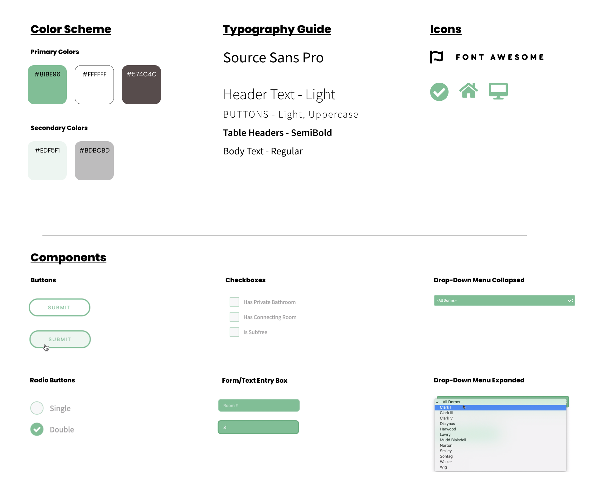

SageDorms
Semester Project - Database Systems Course
10 Weeks,
Spring 2020
mySQL, Python, Html, CSS, Javascript, Jinja, Google Suite, Zoom, LaTex
Gabriel Alzate, Yurie Muramatsu, Helen Paulini, Ilana Shapiro, Alan Zhou
Web Design & Development, Frontend Engineering, Backend Engineering, OLTP Database Management
SageDorms is a semester-long project created during my Database Systems course at Pomona College. For this project, teams were assigned to build an OLTP (online transaction processing) or OLAP (online analytical processing) database system aimed toward creating a solution or new system to improve a problem that students face.
My team created the SageDorms website, an OLTP database system to facilitate our school’s room-draw process. SageDorms is intended for Pomona College students and the Housing and Residence Life admin. We were motivated to create this project in order to eliminate the previously in-person setup of room-draw, which required students to wait in-person for many hours in order to complete their dorm room selection. This process was slow and inconvenient, and also required residence hall staff to be present during this entire weekend long process to assign everyone’s rooms. By implementing an online system for room-draw, SageDorms provides a more efficient and convenient model for both students and staff, in which each student has a registration slot during which they can choose their room right from their laptop or phone.
I co-led the creation of the frontend of our website, developing the web design, layout, and user flow for all user-facing aspects of our website. I oversaw the production of HTML, CSS, and Javascript. While I primarily focused on our system’s interface, frontend, and design, I also contributed toward backend and other features such as helping develop our business model, schema, collect data, test our website, and solve challenges and extra considerations when building our database system.
How can we build a system that replaces the in-person room-draw process with a streamlined, organized, and accessible online room-draw experience that allows students to make confident and informed decisions when making their dorm room selections?
SageDorms provides easy online room-draw services throughout the whole selection process - from forming suite groups and choosing roommates, to finding the best room match for you, selecting your dorm or suite, and more!
Simple and familiar login portal using Pomona College's Central Authentication System (CAS) login (8-digit student ID and school password)
Save your favorite rooms to your wishlist for quick access once it's time to make your selection
Real-time room viewing
During your allotted room-draw selection time, see what's still available and select your dorm from the list of remaining rooms
To develop SageDorms, my team worked together to plan, build and manage the database, and finalize our user-friendly website. We collaborated in mapping out our site's desired functionalities, as well as brainstorming the myriad of considerations and user cases that we would need to account for with our system. We built our database management system, including entity relationship diagram, relational schema, and business logic. Finally, we put everything together by connecting the backend and frontend so that we had a smoothly running and visually appealing website that students could easily use.
We collected and managed data on each room’s information, such as the sub-free or sub-op status of the room, the number of residents per room (single, double, or triple), the room’s building, number, and other room specific details (dimensions, number and type of windows, number and type of closet). Availability of rooms needs to be stored in real-time during the draw, as well as whether the room is part of an application-only or restricted dorm or whether the room is reserved for RA’s or sponsors. Rooms that are parts of suites also need to be differentiated from individual dorms. Accessibility information of the room and building (access to elevator and air conditioning) is also included in our data collection. Student data includes information such as ID, assigned draw number, draw type (suite or individual), and draw time. Once a student has completed their room selection, this room will also be stored in the database linked to its designated student.
We also conducted peer interviews to gain information from students on their previous room-draw experiences and how it can be improved. Students were highly in favor of an online system, and particularly expressed interest in a system that handles room-draw for singles, doubles, and multi-room suites. Through our interviews and data collection, we also gained knowledge on how the room-draw numbers are averaged for members of suites versus “drawn-up” for roommate duos. That is, the higher draw number of two students living together will be used when deciding room selection order.
My team and I brainstormed a number of functionalities that could be implemented in this program, and categorized them into three groups: Must have, Good to have, and Icing on the cake.
Must HaveOur biggest priority is to create a working room draw system. Our must-have functionalities are as follows:
- Users must be able to see which rooms are available and which have already been taken.
- Prior to selecting a room, students are allotted a room draw time slot according to their room draw number. During their time slot, a student can select an available room, which will then be marked as “taken” by the DBMS and removed from the list of available rooms. This is somewhat similar to the course selection process, in which students can add available courses to their schedule during their allotted course registration time.
- There will be a search feature that allows users to filter available rooms by certain attributes or speci- fications (e.g. “two windows”) that they select from a drop-down list of choices. They can also search directly for specific rooms.
- Users can use SageDorms for friendship suite room draw. A friendship suite consists of two to six rooms, and is selected by one person for the whole group during the draw. Suite drawing occurs before regular room draw. The group’s room draw number, an average of (up to) the four primary members, will be calculated ahead of time and will determine the group’s draw time. Each group designates a representative, who performs the selection of a friendship suite on behalf of the group. Users can also choose to view rooms grouped by the suite that the rooms belong to.
- Users can create and curate a wishlist of their desired rooms. They can choose to have only these rooms displayed to them. This allows them to more easily see which of their desired rooms are still available.
Our stretch feature is to implement the layout of room availability as an interactive map by building (taken rooms will be greyed out). Users can see room details by clicking on rooms on the map. During their time slot, users can select their room through the map as well.
Perhaps our first lesson in database implementation was that data in the real world is often messy. We wanted to populate our MySQL database with rooms available to students, which included information regarding dorm, room dimensions, closet and window types, occupancy, etc. However, there was no readily-available source for this information outside of the room descriptions that Housing and Residence Life posts on its website. These descriptions were poorly formatted, incomplete, contained extraneous information, and, most importantly, inconsistent. We first pulled the raw information into a text file, then cleaned and pre-processed it, both manually and using a Python script that identified when data was not in the appropriate atomic structure.
Once we had the data in a clean .txt file format, we wrote a python script to parse it and convert it to a .csv file whose columns match those in the corresponding tables in the database. We created SQL files to create the tables and add sample data to the Dorm and Student tables before adding data from the .csv file. At this point all data has been stored in the database. Queries that retrieve or alter data are written as stored procedures in our various SQL files. Examples include getting room details, creating a suite group, and adding to your wish list. Each of the stored procedures has a python wrapper function that allows it to be called from the frontend.
Our python file, app.py, is the point of connection between frontend and backend. We run the project by running this file. Each function in app.py gets called when the user goes to the relevant HTML page. Info is passed from the HTML files to app.py in forms sent via POST methods. If there is data to be returned to app.py that needs to be displayed on the frontend, the function will return this data as a list of lists and then pass this data to the HTML file for further processing. This allows each individual page to be constructed based on the contents of the database.
For the frontend of our app, we used an html template as the base skeleton for the formatting and layout. We heavily built upon the template, adding new pages, tabs, forms, buttons, tables, images, and other features. For example, we made html pages for viewing rooms within dorms, containing images of each dorm’s floor maps, and tables containing each suite or room within the dorm, along with room details such as size and bathroom type. These html files are coded such that they use the room data from our database in order to populate the tables and room details. Another feature we included was with the "Wishlist" buttons that allow a user to add a room to their personal wishlist. The wishlist button is styled such that the button disappears once it is clicked, so that the user doesn’t add a room to their wishlist more than once. This was possible through AJAX (Asynchronous Javascript and XML), which allows us to send POST requests without refreshing the user’s page.
For the first iteration of our frontend, I considered using a Wix template for our site. However, after testing out styles and formats, I decided to use a simple HTML template as a base canvas that I could more freely customize and alter to fit the needs of our website.
At first, I played with contrasting blue and orange colors, to match Pomona College’s school colors. While this color scheme is fitting for our site which provides services affiliated with Pomona College, the high contrast between the vivid blue and bright oranges created a busy and oversaturated look. Because our website provides a wide range of services and information, I wanted to make sure that the style of the website is minimalistic and would not be distracting while using it. So, instead of using the original orange and blue color scheme, I decided to go with a simple teal/mint green color scheme, with cohesive and minimal accent colors. This gave our website a much more sleek and organized look, while still providing contrast between the text and components so that all parts of our website are easy to read and understand.
I also wanted to utilize plenty of whitespace on our site, so that elements did not feel cluttered or cramped. Because room-draw can be an overwhelming process, especially for first year students who are going through room-draw for the first time, I wanted to make sure our site was as calming and straightforward as possible. I achieved this by editing and revising the site’s design from the initial iteration to the final version by implementing clean and organized grids, simple typefaces and icons, and a minimalistic color scheme with lots of whitespace.

🔈 (Sound on)
Through this project, I learned and gained first hand experience of the full stack process from setting up a mySQL database to building the frontend, and how to connect the backend and frontend with Python. My team and I became familiar with using mySQL to write complex queries, and the start to finish pipeline from user to backend and back. This project was completed over ten weeks, and along with the technical skills and knowledge I gained, I also learned the importance of open communication and having regular team meetings. Because we each had our own focus on certain aspects of this project, it was vital that we were all on the same page and updating each other with our progress and work, as well as collaborating, brainstorming, and making decisions together often. We also learned the importance of starting tasks early and debugging early and often to test our code and uncover bugs before moving on to other parts of our app. Through this, I also gained insightful experience on finding resources and helpful tips online that I could use when I needed assistance or guidance when implementing a new or unfamiliar feature. As my team and I worked on our project, we became more familiar with the intricacies of implementing our system, and it became easier to identify errors and know how to write our code such that it is scalable, comprehensive, and as error free as possible.
Also, I would like to thank my professor, Yuqing Melanie Wu, and amazing teammates Gabe Alzate, Yurie Muramatsu, Ilana Shapiro, and Alan Zhou. ☺


Made with ♥ by Helen
Helen Paulini 2023 | All Rights Reserved
Free Html Templates Attribution